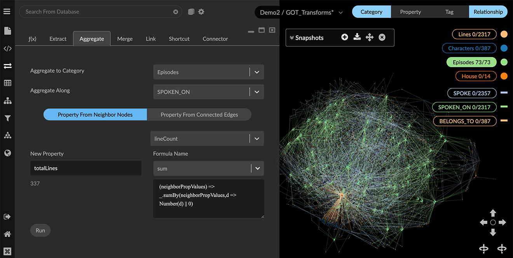
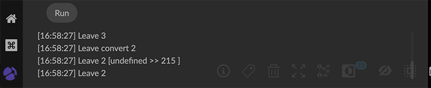
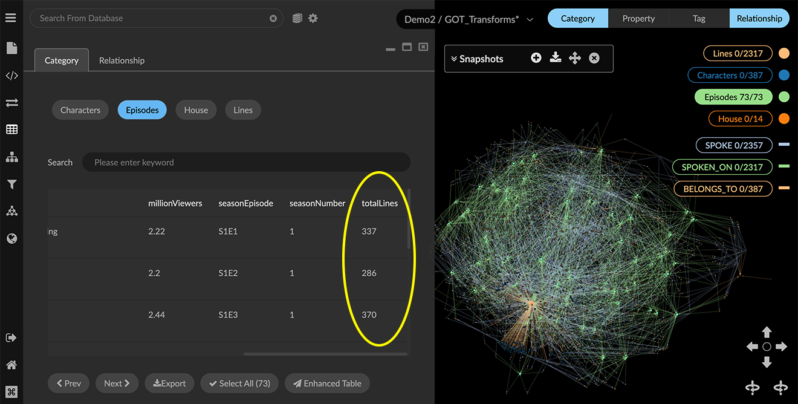

Collecting data with Aggregate Aggregate lets you gather properties from a node’s neighboring nodes or edges, optionally perform a function on those values, and write the result back to the origin node. You can use Aggregate to generate quantitative data relating to how graph data are connected. For example, in a telephone call log, you can aggregate the number of incoming and outgoing calls for a given caller, and write that aggregate value as a property on each caller node. The Aggregate transform starts from a node, collects neighbors connected by a specified relationship, calculates new aggregate property values, and writes them back to the original node as a new property. You can aggregate along either a property of neighbor nodes or a property of connecting edges. Preset formulas for an Aggregate property Preset formulas are available for often-used calculations, as shown in the following table. You can also enter a custom javascript formula. Preset Function Format custom Editable format take first Copies the first value of another property. (neighborPropValues) => _.size(neighborPropValues) > 0 ? neighborPropValues[0] : null count Calculates a value based on number of connections. (neighborPropValues) => _.size(neighborPropValues) sum Sums the values of the selected property. (neighborPropValues) => _.sumBy(neighborPropValues,d => Number(d) | 0) average Averages the values of the selected property. (neighborPropValues) => .sumBy(neighborPropValues,d => Number(d) | 0)/(.size(neighborPropValues) > 0 ? _.size(neighborPropValues) : 1) range Finds the lowest and highest value of the selected property. (neighborPropValues) => ${_.minBy(neighborPropValues, d => Number(d) \| 0)} - ${_.maxBy(neighborPropValues, d => Number(d) \| 0)} max Finds the maximum value of the selected property. (neighborPropValues) => _.maxBy(neighborPropValues, d => Number(d) \| 0) min Finds the minimum value of the selected property. (neighborPropValues) => _.minBy(neighborPropValues, d => Number(d) | 0) Editing a preset moves it to the custom item, where you can test or run the modified formula. Aggregating connections between nodes We can use Aggregate to find the total number of lines spoken on each Game of Thrones episode. Examples use the open-source dataset for the HBO Game of Thrones series. For a hands-on exercise see our How to GraphXR tutorials. A Lines.csv file includes data about the dialog in the show, and an Episodes.csv file includes details about each season and episode. We first transform data imported from these files as follows: Use the f(x) transform to calculate seasonEpisode property values for the Episodes category. This allows us to match the seasonEpisode property in the Lines category. Use the Link transform to link lines to their respective episodes through a new SPOKEN_ON relationship. To aggregate connections between nodes: Select one or more nodes. For example, click the Episodes category to select its nodes. Open the Transform panel and Aggregate tab, and enter the following: In Aggregate To Category, select Episodes. In Aggregate Along select the SPOKEN_ON relationship. Click Property from neighbor nodes and select the lineCount property. In the New Prop textbox, enter totalLines. This is the new aggregate property that will contain the total number of lines of dialog in an episode. In the Formula Name menu, select the sum preset. A sample result is displayed below the property name.  Click Run. Error and completion messages appear below the Run button. Since we are just adding a new property, the graph does not visually change.  To review the new totalLines property, open the Table panel, click the Category tab, and select Episodes. You can also Export the entire table as a CSV, or open an Enhanced Table to edit and export the table. 